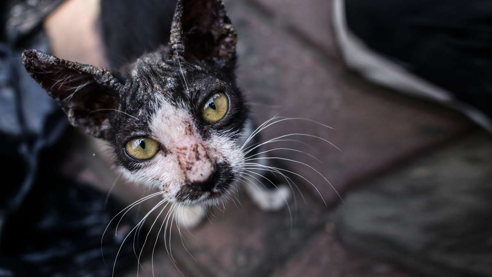

¿Que hacer si encuentro uno?
Acercarte
Si ves al animales (Ya se perro o gato) En la calle, lo más probable es que lleve un buen tiempo solos, por ende lo más recomendable es acercarse con cautela.
Recomendamos acercarte usando de señuelo comida o agua. Extendiendo tu mano e intenta acariciarlo para crear confianza. Sin mirar directamente al animal y poniéndote en a su altura para evitar intimidarlo.
Debes hablarle despacio para que tu presencia lo tranquilice, al acercarte podrás saber si este está herido.
Identificar al animal
Hay casos en los que el perro o gato suele llevar una placa el collar. Si tienes un poco de suerte, es posible que el teléfono esté actualizado y su dueño pueda recogerlo. Estos casos suelen ocurrir sobre todo con perros que se han escapado o perdido. Por ende significa que hay alguien buscandolo, entonces no nos sera tan dificil encontrar al dueño.
Adopcion transitoria
La adopción irresponsable es la principal causa de abandono, si no puedes tener una mascota de forma permanente, la alternativa sería ofrecer tu un espacio en tu caso a este animalito sólo de forma temporal hasta que le ayudes a obtener un nuevo lugar de adopción definitiva. Esta es una gran ayuda, debido a que los refugios suelen tener cupo limitado y cuidar a una mascota, aunque sólo sea por un tiempo determinado, también te dará momentos de felicidad.
Brindarle un nuevo hogar es lo mejor que puedes hacer por una mascota abandonada, pero, es importante hacerlo de forma consciente y responsable tomando en cuenta todos los aspectos que esto conlleva.
Denuncia el maltrato animal
Los animales de la calle, al no contar con la supervisión de una persona que los cuide, son los más expuestos a los peligros de la misma. El maltrato puede presentarse de muchas formas. Aunque también existe el caso, de animales con dueños que no les dan el trato adecuado y abusan de su bienestar.
De acuerdo a la pagina del Gobierno de Argentina "La ley protege a los animales del maltrato y la crueldad de las personas. Estos actos son delitos y podés denunciarlos. Ley 14.346"
- No alimentarlos bien.
- Estimularlos con instrumentos que les causan dolor, como el látigo.
- Hacerlos trabajar muchas horas sin descanso.
- Hacerlos trabajar cuando no están en buen estado físico.
- Estimularlos con drogas sin fines terapéuticos.
- Usarlos para llevar vehículos muy pesados.
¿Qué puedo hacer en caso de maltrato o crueldad con animales?
Tenés que hacer la denuncia penal. El trámite es gratuito y los funcionarios están obligados a tomarla. Según donde vivas, podés hacerla en la comisaría más cercana al lugar donde ocurrió el hecho, en la fiscalía o UFI (Unidad Funcional de Instrucción) En el Juzgado de instrucción.
Castra a tus mascotas
Otra de las principales razones (Conjunto a la adopcion irresponsable) por la que vemos tantos animales en las calles es la reproducción animal descontrolada, por lo que, al castrar a tu perro o gato, estarás contribuyendo a disminuir el riesgo de que alguna de sus crías termine en las calles. Existen diferentes campañas que promueven la castracion animal y sobre todo, puede llegar a se un procedimiento costoso, pero se ofrecen campañas en donde se realizan sin costo
